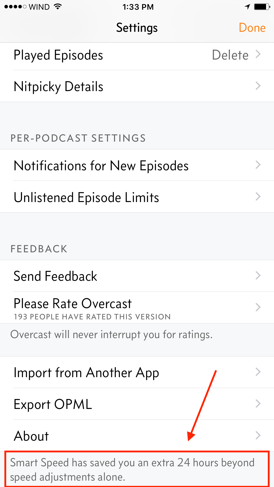

- Akshiv’s Guide to Listening to Podcasts!
So lots of you guys have more time these days so I am going to recommend my favourite podcasts per theme and give you my tips on listening. I am also going to be uploading my spreadsheet that I use to track my full list of podcasts I listen to; it is pretty expansive so go there if you really want to know about something. I am always looking for cool new podcasts to add so I would love your suggestions.
How I recommend listening
iOS: Overcast This is an easy choice. The app is free and well designed, in fact the developer has his own podcast ATP (which is pretty good!). It includes a bunch of custom settings if you are nerd, but it is easy to setup and get listening if you don’t care for the extras.
Android: Pocketcasts ($4.00) When I used to own an android phone this is what I used. Easily the best four dollars I spent, the clean and simple UI made it totally worth it. I honestly sometimes still miss the tiled view of pocketcasts. This is also your best bet if you need cross platform compatibility.
Computer: Web Players While Spotify, google play, and iTunes all offer the ability to play podcasts, I don’t recommend you do it this way. I would either listen to them using the Overcast Web Player, which will keep your feeds synced with the overcast app, or the podcast’s own website/soundcloud feed. There is also a Pocket Casts client which is $9, a little steep if you ask me, but fine if you use there apps on other platforms already.
Settings: On both pocket casts and overcast, there is a smart speed feature. This essentially shortens the silence in a podcast, by speeding up on the silence. I use this on almost every podcast I listen to on Overcast, and it has never been an issue. It simply saves you a little time, which can really add up:

I also personally listen to most podcasts at 1.5x speed. Podcasts which I love (ones in the top 3 spots usually) get the 1.0x treatment, everything else gets played at at-least 1.5x speed. After a while you stop noticing the difference and everyone kind of sounds normal. Some podcasts that are really long or the hosts talk very slowly even get bumped up to 2.0x. While this may seem counterproductive, there are benefits to making the content harder to understand. “The Benefits of Cognitive Disfluency” are a well-documented phenomenon (SagePub article), and this basically means that you are MORE likely to retain things that your brain has to work harder on understanding.
These are my suggestions by category, I kept it two a piece, with a links to some great starter episodes.Comedy
The Bugle
Pop culture + News, riffed on by John Oliver and Andy Saltzman. Funny as fuck, unfortunately cause HBO is taking over John Oliver life, it is going to be changing, but the backlog is totally worth it
The Mortified Podcast
People share their childhood writing as adults. It amazing, beautiful, and truly cringe inducing.
Economics
Freakonomics
This is where I got started listening to podcasts. Stephen Dubner does a great job with each episode, they are excellent without having read the books(if you have read them there are couple episodes you will probably skip, still great though). Each episode can be enjoyed on its own. If we ever talk after you listen to this you will understand where my argument style originates.
King Soloman and David Lee Roth
Planet Money
Solid economics reporting, understandable, relatable and told very well. I don’t think I have missed an episode in two years.
How Four Drinking Buddies Saved Brazil
US Government
Five Thirty Eights Elections Podcast
Super relevant right now. The 538 crew sits down every Monday to break down the election using our good old friend Math. Listening to Nate Silver and Harry Enten go at it makes it totally worth it. IMO you don’t need another source for election news.
2016 vs 2008 Democractic Primary
Decode DC
I have not listened to this podcast recently; I was accidentally dropped from my feed so I stopped listening. BUT I did listen to the first 90 episodes, and they were all excellent. If you want to know what real politics is like, unmarred by news, partisanship, and propaganda, this is the correct podcast. Really nothing else has looked so carefully at how the sausage gets made.
Exit Interview: Rep. Rush Holt
Science and Tech (no surprises here)
Radiolab
Easily the best mainstream podcast around. They are consistently up top on iTunes for good reason. They make amazing content, each story makes you think and wonder.
99% Invisible
A radio show about design shouldn’t work, but Roman Mars is a true wizard. Weekly, I am amazed by the quality of work they produce. I have listened to every episode and loved every minute of it. This is currently my third favourite podcast.
History
The Memory Palace
I love this podcast. I can’t even quite explain why. They are these beautiful moments in history taken out and put on display. These stories got lost in the noise but Nate DiMeo found them and dug them up for your enjoyment. This is my second favourite podcast.
I really like this one but it’s very creepy, I'm Still Alive
Dan Carlin’s Hardcore History
Dan Carlin tells these huge narrative arcs about big historical events. He recently wrapped up a six part series on the First World War. Each part is about 4 hours so it is not for the faint of heart. Carlin brings the colour to history, so if you don’t have a solid base of knowledge, it can be hard to tell the fact from fiction. He does do an exceedingly good job of warning the listener of parts that are disputed in the annals of history.
General
Good Job Brain
Great weekly trivia show. Always fun segments and quizzes, good to play along. Usually the trivia is decently challenging, offers a good mix of tough and easy content. Four friends are essentially quizzing each other for the enjoyment of the listener.
Ted Radio Hour
Guy Ross makes the TED content come alive on the radio. The TED talks are reimagined for radio and he always goes deeper asking the really interesting questions of the speakers trying to reach places of deeper understanding that you don’t always get to with just the vanilla TED talk.
Work
The Knowledge Project
I very recently started listening to this but it is kind of engrossing. Shane Parish interviews really successful people weekly and you get to look behind the curtain. My productivity actually went up listening to this.
Sanjay Bakshi on Mental Models
Cortex
Myke Hurly and CGP Grey break down different parts of their self-employed lives. Consistently funny, and genuinely useful, it is an instant listen when it is my podcast feed.
Other
Criminal
This is hands down my favourite podcast. Phoebe Judge has the most wonderful voice for radio. The podcast is about true crime stories. Each episode leaves you wondering and hungry for more. I can’t recommend this enough.
The Allusionist
A fun and funny podcast about words, etymology and the roles language plays. Genuinely comical and truly insightful.

{kind=link}